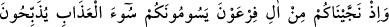
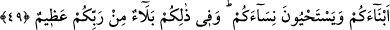

sadece kendi gayret ve çabası fayda verecek, ondan fidye bile, kabûl olunmayacaktır.
“Siz Allah’a yardım ederseniz, O da size yardım eder.” (Muhammed, 47/7) âyetinden
anlaşıldığı üzere, Allah’ın dînine yardım etmemiş olan kimselere hiçbir yardımda
bulunulmayacaktır.
49. Hatırlayın ki, sizi, Fir’avn taraftarlarından kurtardık. Çünkü onlar size
azâbın en kötüsünü revâ görüyorlar, yeni doğan erkek çocuklarınızı kesiyorlar,
(fenâlık için) kızlarınızı hayatta bırakıyorlardı. Aslında o size revâ görülenlerde
Rabbinizden büyük bir imtihan vardı.
Ey İsrâîloğulları, sizleri yâni babalarınızı Fir’avn’dan kurtardığımız vakti hatırlayın.
Allah Teâlâ, babalarını kurtarmasına rağmen o günkü yahûdîlere sizi kurtardık,
demektedir. Çünkü atalarının kurtarılması, onların kurtarılması demektir. Zâten bu ifâde
Arap dilinde vardır. Meselâ: Onlar, “Sizi Ukaz savaşında öldürmüştük” derler. Bununla
“babalarımız babalarınızı öldürmüştü” mânâsını kasdederler.
“Necv” yüksek mekân demektir. Çünkü yüksek bir yere çıkan tehlikelerden sâlim olur.
Bu sebeble kazanan, başarı gösteren kimseye “Nâcî” denmiştir. Çünkü böyleleri
darlıktan, ferâha çıkmışlardır. Babalarınızı Fir’avn ve onun tâbilerinin, dindaşlarının
eziyetlerinden kurtarıp selâmet bir yere götürdüğümüz zamanı hatırlayın.
İran krallarına “kisrâ,” Rumlarınkine “kayser,” Türklerinkine “hâkan,”
Habeşlilerinkine “necâş,” Yemenlilerinkine “tübba’” denildiği gibi, Amâlika
krallarına da “Fir’avn” denirdi. “Amâlika zorbaları”, Imlik b. Lâvud b. Aram b. Sâm b.
Nûh (a.s.)’ın çocuklarıdır. Şam halkı, onlardan olup “Cebâbire” ismini almışlardır.
Mısır yöneticileri de onlardandır. “Ferâine” diye isimlendirilirler. Amâlika melikleri
azgınlıkları sebebiyle bu ismi almışlardır. Bu yüzden azgınlık gösteren ve isyan
edenlere “Adam fir’avnlaştı” denir. Ancak bütün fir’avnlar kötü olmayıp, özellikle
Mısır fir’avnları azgınlık göstermişlerdir. Mûsâ (a.s.) zamânındaki Fir’avn’ın ismi
Velîd b. Mus’ab b. Reyyân’dır. Kıpt kavminden olup 400 seneden fazla yaşamıştır.
Rivâyete göre o, Isfahanlı bir koku satıcısıydı. Girdiği borçlar yüzünden iflâs etti ve
Şam’a kaçmak zorunda kaldı. Orada da barınamayıp Mısır’a geçti. Mısır’da şehir
içinde bir karpuz bir dirhem; şehir dışında ise bir yük karpuz bir dirhemdi. Karpuz
satarak borçlarını ödeyebileceğini düşündü. Dışarıdan bir yük karpuz getirdi; ancak
rastladığı vergi memurlarının her biri, ondan bir karpuz aldı. Nihâyet şehre geldiğinde
elinde bir karpuz kalmıştı, onu da bir dirheme sattı. Şehir halkını başı boş, idâresiz bir
hâlde buldu. Büyük bir vebâ salgını halkı kırıp geçirmekteydi. Bir mezarlığa gitti. Bir
cenâze defnedilmekte olduğunu gördü.